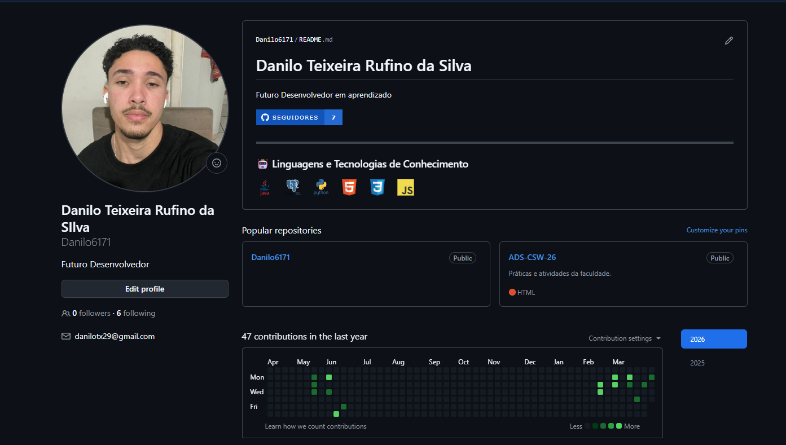

Bem-vindo
Bom, me chamo Danilo Teixeira Rufino da Silva, tenho 22 anos e sou estudante do curso de Análise e Desenvolvimento de Sistemas e tenho interesse na área de tecnologia desde cedo. Escolhi esse curso porque gosto de lógica, programação e de entender como os sistemas funcionam por trás. Meu principal objetivo profissional é me tornar um desenvolvedor back-end, trabalhando com o desenvolvimento de sistemas, bancos de dados e regras de negócio.
Habilidades pessoais
Tenho facilidade para aprender coisas novas, sou organizado, responsável e persistente. Consigo trabalhar bem em equipe, sigo orientações e procuro sempre resolver problemas de forma lógica. Tenho interesse em programação, raciocínio lógico e tecnologia, além de saber utilizar o computador e ferramentas digitais no dia a dia.
Vida Acadêmica
Me formei no ensino médio na escola EEEM GODOFREDO SCHNEIDER no ano de 2022 e após 2 anos ingressei na Universidade de vila velha.
Materias da Faculdade
No curso de Análise e Desenvolvimento de Sistemas, estou estudando disciplinas relacionadas à programação(java, python e etc), lógica, banco de dados, estrturas de dados e tecnologia. Essas matérias ajudam a moldar uma maturidade e entendimento do que eu aguardo na área profissional futuramente como desenvolvedor back-end.
Planos pro futuro
No futuro, desejo trabalhar como desenvolvedor back-end, atuando no desenvolvimento de sistemas, APIs e bancos de dados. Pretendo ganhar experiência profissional, continuar estudando novas tecnologias e crescer na área de desenvolvimento de software, buscando sempre evolução pessoal e profissional.
Curriculo
Dados Pessoais
- Nome: Danilo Teixeira Rufino da Silva
- Telefone:(27)98865-1606
- Email:Danilotx29@gmail.com
Objetivo
Atuar na área de Tecnologia da Informação, com foco em back-end e desenvolvimento de sistemas.
Formação Acadêmica
- Análise e Desenvolvimento de Sistemas - UVV (Cursando)
Experiência Profissional
-
Suporte de TI - Autoglass
- Atendimento e suporte técnico a usuários
- Manutenção de sistemas e equipamentos
- Diagnóstico e resolução de problemas
- Apoio na infraestrutura de TI
-
Menor Aprendiz - Honda
- Organização e controle de estoque
- Auxílio com impressoras
- Suporte em atividades operacionais
Habilidades
- Comunicação excelente
- Trabalho em equipe
- Proatividade
- Rápido aprendizado
- Resolução de problemas
- Conhecimento em suporte técnico
- Noções de desenvolvimento
Diferenciais
- Experiência prática na área de TI
- Perfil comunicativo e dinâmico
- Facilidade em lidar com pessoas
GitHub 

Ir para o meu GitHub